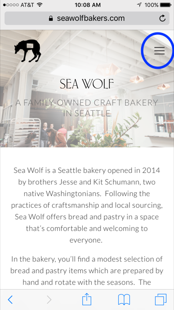
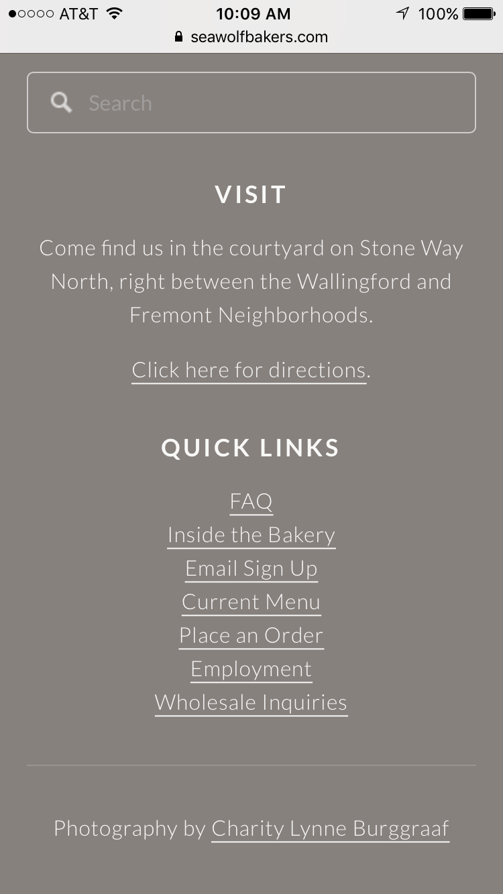
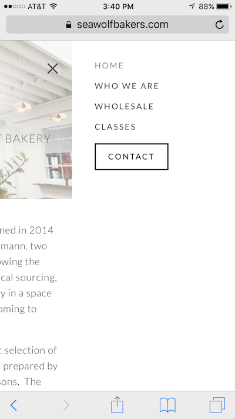

This post is a report on my usability studies for Sea Wolf Baker's mobile website. To see my review of Sea Wolf's desktop version, see here.
The Test Subjects.
I used four test subject for my mobile usability studies, 3 women and 1 man, and they ranged from age 18 to 85. Only one of my subjects had been tested with Sea Wolf's desktop version, and I included her to see if familiarity made any difference. All tests were done on an iPhone 6 and recorded using an iphone 8. A sample of the instructions I handed to my test subjects can be found here. This script is based on an sample provided Steve Krug, author of "Don't Make Me Think"; links to this script and Krug's book can be found in the resources section at the end of this report.
My test questions are listed below.
- Can you find the bakery hours, location, or a way to call/email them?
- Can you find out where to sign up for classes?
- Can you find a menu?
- Can you find a search bar?
All of my testers started by reviewing the landing page and being asked to explore without clicking on anything. I asked all of them to talk me through their process and give me feedback. The landing page for Sea Wolf Bakery's mobile site is shown below.
Sea Wolf's Home Page, top, for mobile
Three of my test subjects, Phil, Jack, and Molly (all younger than 40) explored the home page without reading anything but the headers, and all three rapidly scrolled all the way to the bottom, back to the top, and then back to the bottom again in less than 10 seconds. Phil and Molly noticed the hours and address at the very bottom without being prompted, but Jack missed it. All three younger users noticed the hamburger, the menu link, and the "call now" button because they are used to looking for hamburgers and links. My fourth subject, Evie, an elderly woman, had a hard time realizing there was more content, would pause in her scrolling, and the large sections of text were rather overwhelming for her (there was some screaming). She was not aware there were links on the page, she thought it was all text, and so the first time through she accidentally clicked on a link and went to the Book Larder's website and had to be helped back. My elderly subject also noticed the address at the bottom when she finally got there, mostly because she was reading everything and is observant. Her initial exploring process took about 15 minutes.
All of my test subjects remarked on the relaxing colors on the home page and Wolf-with-the-hole-in-the-middle logo, "why is there a hole in the wolf", "there is a hole in the wolf", etc. (If you care why there is a hole in the wolf, this is a scavenger hunt question. Follow the link to Sea Wolf Bakers website above and see if you can find where the answer is hidden on their website, time yourself, and please send me a report.)
The Questions
The first question I asked my guinea pigs was if they could find the location of the bakery, its hours, and how to contact them. Phil and Molly remembered where they had seen them and quickly scrolled to them in the footer, but the other two were briefly lost. It took Jack about three minutes to find it in the Contact menu item in the hamburger and Evie about a minute to remember where she saw it and about two and a half minutes to scroll to it. Jack admitted he didn't expect to find the information in the footer and expected it to be higher up. Below is a screen shot of the footer in the mobile site. The footer links were largely ignored by all four and were the last to be explored.
Sea Wolf mobile, footer
The picture below shows the sideways slide of the home page to the left and the extended hamburger menu when the hamburger is clicked on.
Sea Wolf's hamburger menu, mobile
Classes
My second questions was how to find what classes they offer and how to sign up for one. This was the hardest task for all of them, mostly because the link for classes is in the hamburger and then to find what classes are offered you need to scroll to the bottom of the page and click another link. This takes you to The Booklarder's website, which, frankly, is a mess. Booklarder posts classes taught by many different entities and instead of removing full classes from the main page, they simply fade them a little and stamp sold out over the top. The classes are organized by date instead of teachers and it took all three younger testers more than five minutes to find out there are no classes for Sea Wolf available (all filled), but you can add your name to a waitlist after a class is closed. Evie got very confused on the Booklarder's website and had to be helped back again. All four testers thought Sea Wolf should promote and book their own classes. Below is a example of Booklarder's main page.
Booklarder, mobile
Finding the menu
The third question I asked my group was if they could find a menu. This was an easier task, the younger three pulled it up in less than five seconds and Evie found it in about a minute. She was not sure what to click on but she got it pretty quickly. The link opens a new tab and displays a pdf. All three younger testers thought the menu would look better with pictures and Evie had to be helped back from the new tab.
Find the Search Bar
For my last test I asked my four subjects if they could find the search bar, which is in the footer. All four of my testers went right to it, Evie scrolled a little slower, but I feel the speed at which they found it showed they were all learning and remembering what they saw. It was nice to end on a positive note.
Google test
At the end of my test with humans I used Google's Mobile-Friendly Test on Sea Wolf's mobile website, and found they considered it to be passing. To view Google's conclusions, click here. You can find a link to Google's Mobile-Friendly Test in the resources below.
Resources:
Krug, Steve. Don't Make Me Think, Revisited : a Common Sense Approach to Web Usability. [Berkeley, Calif.] :New Riders, 2014.
Krug, Steve. Usability Test Script. Rocket Surgery Made Easy. 2010. Link
usability.gov. User Interface Design Basics. Web. https://www.usability.gov/what-and-why/user-interface-design.html
Google Mobile-Friendly Test. Google.com. n.d., Web. here